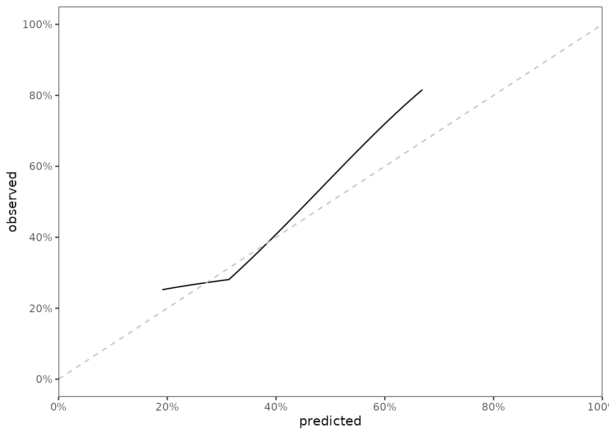
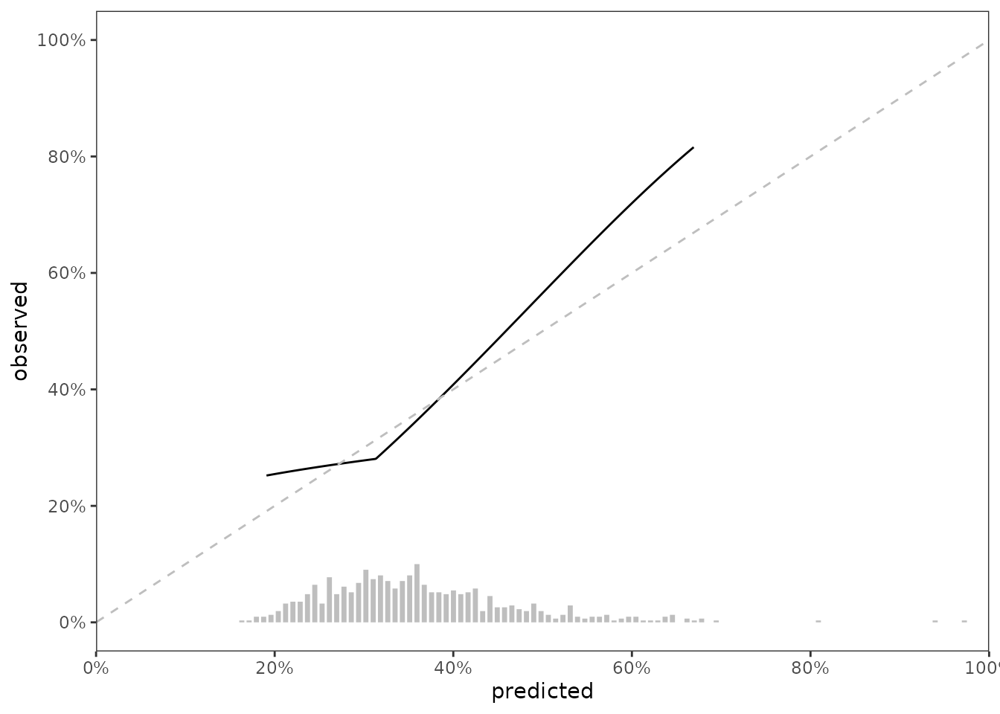
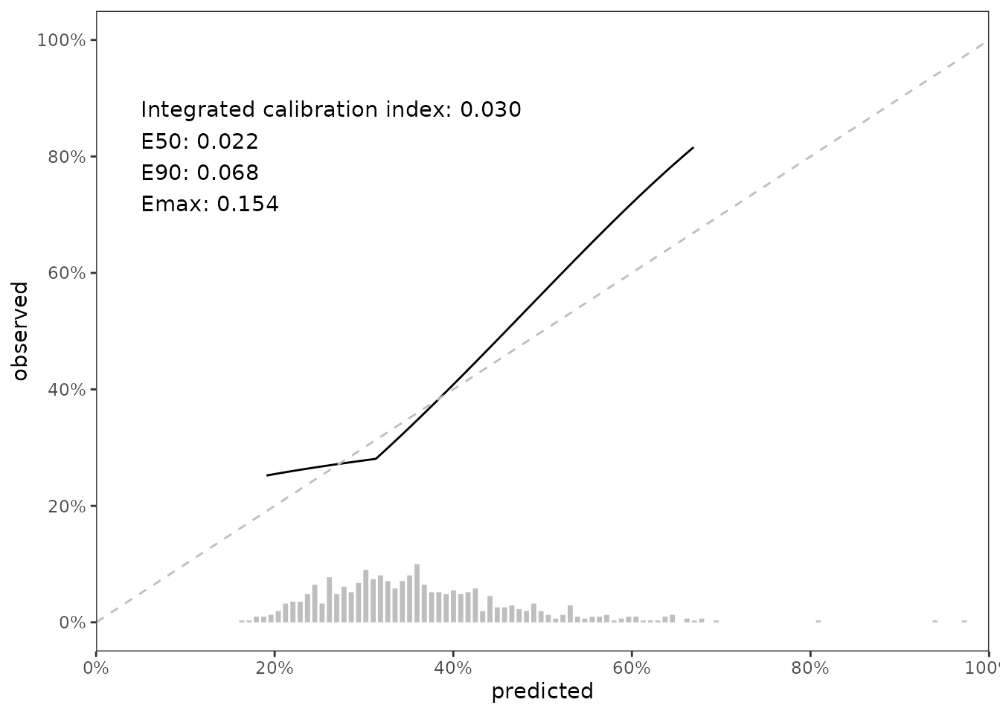
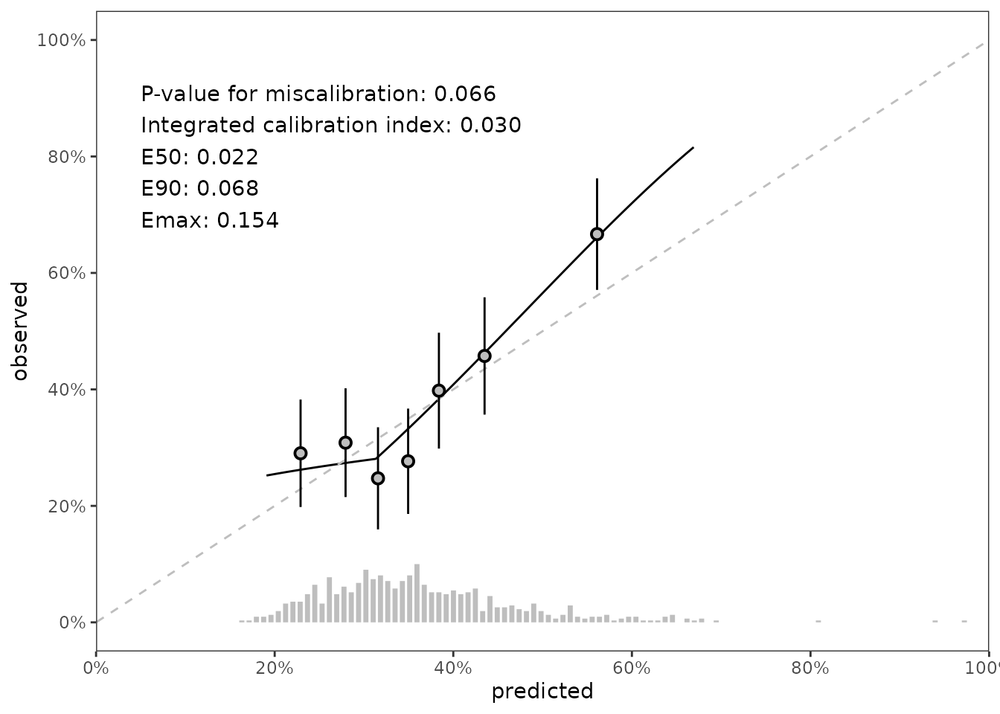

This vignette covers the core philosophy of survival.calib and an extended example where the calibration of a single model is assessed and summarized.
Calibration is an important metric of model performance, particularly for models that could be used in clinical practice. The assessment of calibration should encompass multiple approaches, including:
Visual assessment, e.g., by inspecting a calibration slope curve
Quantitative assessment, e.g., by computing the integrated calibration index.
Statistical assessment, e.g., by performing a test for miscalibration
The purpose of survival.calib is to make these approaches accessible and complement one another. The purpose of this vignette is to show how one would use survival.calib to do that.
library(survival.calib)
library(survival)
library(riskRegression)
library(dplyr)
library(tidyr)
library(ggplot2)
library(table.glue)
theme_set(theme_bw() + theme(panel.grid = element_blank()))
knitr::opts_chunk$set(fig.width=7, fig.height=5)For this example, we’ll use a standard dataset, survival::flchain, with some modifications:
we omit cases with missing values
# drop rows with missing values for simplicity
data_init <- na.omit(flchain)we remove the chapter variable.
# sometimes chapter makes split-sample tests tricky
data_init$chapter <- NULLLeaving us with a pretty clean initial data set
head(data_init)
#> age sex sample.yr kappa lambda flc.grp creatinine mgus futime death
#> 1 97 F 1997 5.70 4.860 10 1.7 0 85 1
#> 2 92 F 2000 0.87 0.683 1 0.9 0 1281 1
#> 3 94 F 1997 4.36 3.850 10 1.4 0 69 1
#> 4 92 F 1996 2.42 2.220 9 1.0 0 115 1
#> 5 93 F 1996 1.32 1.690 6 1.1 0 1039 1
#> 6 90 F 1997 2.01 1.860 9 1.0 0 1355 1We’ll also split the data for training and testing.
Suppose we are fitting a model that uses all variables available in data_train to predict risk for mortality in data_test between baseline and time_predict = 1500 days after baseline.
model <- coxph(Surv(futime, death) ~ .,
data = data_train,
x = TRUE)
# compute predicted risk at 1500 days post baseline
pred_horizon <- 1500
predrisk <- predictRisk(model,
newdata = data_test,
times = pred_horizon)scalib)
The scalib object is the basis of survival.calib. All of the scalib_ functions in the package expect a scalib object as the first input and return a scalib object. To initiate an object of the class, use the scalib() function:
.scalib <-
scalib(pred_risk = predrisk,
pred_horizon = pred_horizon,
event_status = data_test$death,
event_time = data_test$futime)
.scalib
#>
#> Survival calibration object with prediction horizon of 1500
#>
#> -- Input data --------------------------
#>
#> event_time event_status pred_risk_1
#> <int> <num> <num>
#> 1: 115 1 0.451
#> 2: 1039 1 0.426
#> 3: 1355 1 0.483
#> 4: 2851 1 0.348
#> 5: 3309 1 0.463
#> ---
#> 650: 771 1 0.294
#> 651: 2773 1 0.283
#> 652: 2302 1 0.361
#> 653: 886 1 0.252
#> 654: 385 1 0.227Our first method for calibration assessment is visual, and uses the method described in Austin, Harrell and Klaveren, which uses hazard regression (hare) to estimate the relationship between the observed outcome and predicted risk probabilities.
# keeping max dimension low to reduce computation time
.scalib_slope <- scalib_hare(scalib_object = .scalib)
# scalib_hare modifies the scalib object by adding output data
.scalib_slope
#>
#> Survival calibration object with prediction horizon of 1500
#>
#> -- Input data --------------------------
#>
#> event_time event_status pred_risk_1
#> <int> <num> <num>
#> 1: 115 1 0.451
#> 2: 1039 1 0.426
#> 3: 1355 1 0.483
#> 4: 2851 1 0.348
#> 5: 3309 1 0.463
#> ---
#> 650: 771 1 0.294
#> 651: 2773 1 0.283
#> 652: 2302 1 0.361
#> 653: 886 1 0.252
#> 654: 385 1 0.227
#>
#>
#> -- Output data --------------------------------------------------------
#>
#> Key: <._id_.>
#> ._id_. hare_ici hare_e50 hare_e90 hare_emax hare_data_plot
#> <char> <num> <num> <num> <num> <list>
#> 1: pred_risk_1 0.0301 0.0216 0.0677 0.154 <data.table[500x2]>
#> 1 variable not shown: [hare_data_smry <list>]We can visualize data stored in scalib_slope$data_outputs to assess calibration of the model in testing data.
gg_data <- .scalib_slope %>%
getElement("data_outputs") %>%
select(._id_., hare_data_plot) %>%
unnest(hare_data_plot)
fig_cal_slope <- ggplot(gg_data) +
aes(x = predicted, y = observed) +
geom_line() +
geom_abline(col = 'grey', linetype = 2, intercept = 0, slope = 1) +
scale_x_continuous(limits = c(0,1),
expand = c(0,0),
breaks = seq(0, 1, by = 0.2),
labels = paste0(seq(0, 100, by = 20),"%")) +
scale_y_continuous(limits = c(-0, 1),
breaks = seq(0, 1, by = 0.2),
labels = paste0(seq(0, 100, by = 20),"%"))
fig_cal_slope
It’s nice show the distribution of predicted risk underneath the slope of a calibration slope plot. For this visualization, we can use predrisk_bin_segments, which creates a data.frame containing all of the aesthetics required for geom_segment().
data_segment <- predrisk_bin_segments(.scalib_slope,
bin_count = 100,
bin_yintercept = 0,
bin_length = 1)
head(data_segment)
#> ._id_. x y xend yend
#> 1: pred_risk_1 0.1631883 0 0.1631883 0.003225806
#> 2: pred_risk_1 0.1713610 0 0.1713610 0.003225806
#> 3: pred_risk_1 0.1795336 0 0.1795336 0.009677419
#> 4: pred_risk_1 0.1877062 0 0.1877062 0.009677419
#> 5: pred_risk_1 0.1958788 0 0.1958788 0.012903226
#> 6: pred_risk_1 0.2040515 0 0.2040515 0.019354839data_segment is designed to be ‘plugged in’ to ggplot2::geom_segment(), as shown below
fig_cal_slope_hist <- fig_cal_slope +
geom_segment(data = data_segment,
inherit.aes = FALSE,
size = 1.2,
color = 'grey',
mapping = aes(x = x,
y = y,
xend = xend,
yend = yend))
fig_cal_slope_hist
Our second method for calibration assessment quantitative summaries based on the difference between predicted and observed risk. Austin, Harrell and Klaveren describe these summaries in full detail. In brief, let \(\hat{P}_{t}\) denote the predicted probability of the event prior to time \(t\) and let \(\hat{P}_t^c\) denote the estimated probability of the event occurring prior to time \(t\) conditional on the predicted probability (this is what hare does). Define absolute calibration error as \(|\hat{P}_{t} - \hat{P}_t^c|\). Using absolute calibration error, we compute these numeric summaries:
Integrated calibration index (ICI), the mean of absolute calibration error
E50, the median of absolute calibration error.
E90, the 90th percentile of absolute calibration error.
Emax, the maximum value of absolute calibration error.
We can access these values from the data_outputs element of .scalib_slope,
.scalib_smry <- .scalib_slope %>%
getElement("data_outputs") %>%
select(hare_ici, hare_e50, hare_e90, hare_emax)
and we can also place these summaries in our growing figure.
rspec <- round_spec() %>%
round_half_even() %>%
round_using_decimal(digits = 3)
annotate_label <- table_glue(
'Integrated calibration index: {.scalib_smry$hare_ici}
E50: {.scalib_smry$hare_e50}
E90: {.scalib_smry$hare_e90}
Emax: {.scalib_smry$hare_emax}',
rspec = rspec
)
fig_cal_slope_hist_annotate <-
fig_cal_slope_hist +
annotate(
geom = 'text',
x = 0.05,
y = 0.80,
hjust = 0,
label = annotate_label
)
fig_cal_slope_hist_annotate
Our third method for calibration assessment is statistical. We use the Greenwood-Nam-D’Agostino (gnd) test published in Demler, Paynter, and Cook (2015). The gnd test determines whether the differences between observed and predicted risk for groups of data exceeds the threshold of differences we would expect to see from a model with adequate calibration.
# use 7 risk groups. default is 10, but 7 looks nicer on the final plot
.scalib_test <- scalib_gnd(scalib_object = .scalib,
group_count_init = 7)
.scalib_test
#>
#> Survival calibration object with prediction horizon of 1500
#>
#> -- Input data --------------------------
#>
#> event_time event_status pred_risk_1
#> <int> <num> <num>
#> 1: 115 1 0.451
#> 2: 1039 1 0.426
#> 3: 1355 1 0.483
#> 4: 2851 1 0.348
#> 5: 3309 1 0.463
#> ---
#> 650: 771 1 0.294
#> 651: 2773 1 0.283
#> 652: 2302 1 0.361
#> 653: 886 1 0.252
#> 654: 385 1 0.227
#>
#>
#> -- Output data --------------------------------------------------------------
#>
#> Key: <._id_.>
#> ._id_. gnd_df gnd_chisq gnd_pvalue gnd_data gnd_group_method
#> <fctr> <num> <num> <num> <list> <char>
#> 1: pred_risk_1 6 11.8 0.0657 <data.table[7x8]> lumpIn this case, the p-value for miscalibration is .07, but the gnd test also provides data that can be used in visualizations. Specifically, a set of points and intervals for each risk group used by the gnd test illustrate the relationship between predicted and observed risk by group. The summary p-value and data points can be added to our figure like so:
annotate_label_with_pval <- table_glue(
'P-value for miscalibration: {.scalib_test$data_output$gnd_pvalue}
Integrated calibration index: {.scalib_smry$hare_ici}
E50: {.scalib_smry$hare_e50}
E90: {.scalib_smry$hare_e90}
Emax: {.scalib_smry$hare_emax}',
rspec = rspec
)
data_pointrange <- .scalib_test %>%
getElement('data_outputs') %>%
unnest(gnd_data)
fig_final <- fig_cal_slope_hist +
annotate(
geom = 'text',
x = 0.05,
y = 0.80,
hjust = 0,
label = annotate_label_with_pval
) +
geom_pointrange(
data = data_pointrange,
mapping = aes(x = percent_expected,
y = percent_observed,
ymin = percent_observed - 1.96 * sqrt(variance),
ymax = percent_observed + 1.96 * sqrt(variance)),
shape = 21,
fill = 'grey',
color = 'black')
fig_final
scalib_ functions are designed to be used with pipes (i.e., %>% or |>). The code below shows how to make the objects we made above using %>%.
.scalib <- predrisk %>%
scalib(pred_horizon = pred_horizon,
event_status = data_test$death,
event_time = data_test$futime) %>%
scalib_hare() %>%
scalib_gnd(group_count_init = 7)
# outputs are collectively stored as the scalib object
# gets passed into other scalib_ functions. You can
# see from the printed output that we have both
# hare and gnd output in .scalib
t(.scalib$data_outputs)
#> [,1]
#> ._id_. "pred_risk_1"
#> hare_ici 0.03012923
#> hare_e50 0.02162543
#> hare_e90 0.0676779
#> hare_emax 0.1537993
#> hare_data_plot data.table,2
#> hare_data_smry data.table,3
#> gnd_df 6
#> gnd_chisq 11.83926
#> gnd_pvalue 0.06565218
#> gnd_data data.table,8
#> gnd_group_method "lump"